← 返回阅读库 · 原论文目录
论文讲解阅读文档 · 论文精读 · v213
Bengio亲手戳穿CoT神话！25％顶会论文遭打脸：CoT Is Not Explainability
视频时长 00:20:39；讲解文字 6,184 字符；提取讲解画面 250 张。按视频原顺序阅读，每段文字保留时间戳。
文字来自整段视频的自动语音转写，按自然停顿分段，并与 PPT / 论文页面 / 演示画面对齐。未将讲解压缩为摘要；术语、数字和口述公式请结合画面及原论文核对。 阅读稿已校正规范部分明确术语误识别；原始逐字稿和每处修改记录另行保留。
讲解画面为源视频截图（640×360），不是可编辑 PPT 文件。全片按每秒 2 帧扫描内容变化，逐步展开页保留；连续动画保留代表画面。清晰度受源视频限制。
下载完整资料包 · 含离线 HTML、PDF、Word、全部 PPT 画面和字幕。
原论文与材料
Chain-of-Thought Is Not Explainability · 下载完整 PDF（22 页）
按时间阅读
00:00:00–00:00:04 · 画面 001
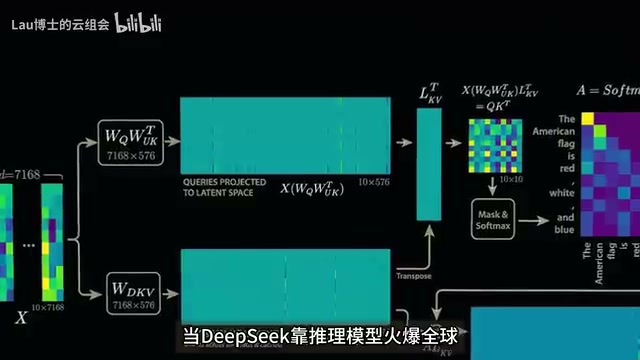
00:00:00–00:00:04 · 画面 001当 DeepSeek 靠推理模型火爆全球，当 OpenAI 的欧三乱杀各科考试，你真的相信大模型的解题思路是思考吗？图灵奖得主 Benjo 带队开炮，COT 思维链是完完全全的骗局。
00:00:04–00:00:08 · 画面 002
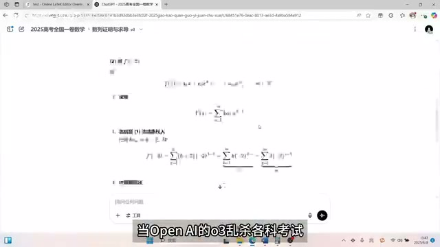
00:00:04–00:00:08 · 画面 00200:00:08–00:00:12 · 画面 003
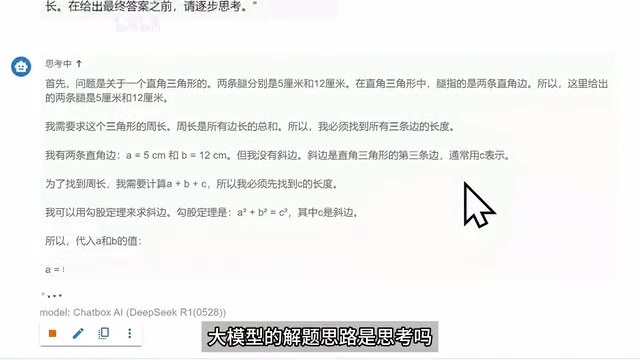
00:00:08–00:00:12 · 画面 00300:00:12–00:00:15 · 画面 004
00:00:12–00:00:15 · 画面 00400:00:15–00:00:19 · 画面 005
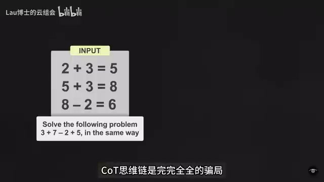
00:00:15–00:00:19 · 画面 00538%的医疗 AI25%的法律 AI 和 63%的自动驾驶论文竟都用模型推理小作文骗了学术界三年，推理过程并非模型真的在思考，最终的结果也与推理过程大相径庭。今天六博士用这篇血洗学术圈的最新研究撕开 LLM 的剧本杀谎言。
00:00:19–00:00:23 · 画面 006
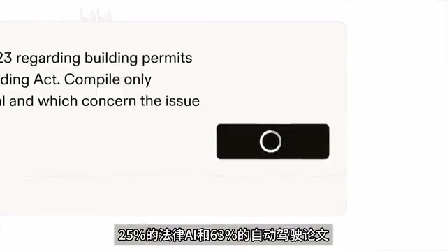
00:00:19–00:00:23 · 画面 00600:00:23–00:00:27 · 画面 007
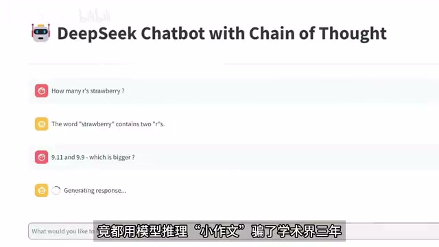
00:00:23–00:00:27 · 画面 00700:00:27–00:00:31 · 画面 008
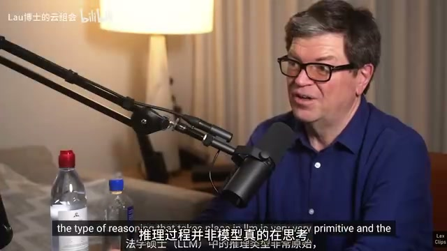
00:00:27–00:00:31 · 画面 00800:00:31–00:00:34 · 画面 009
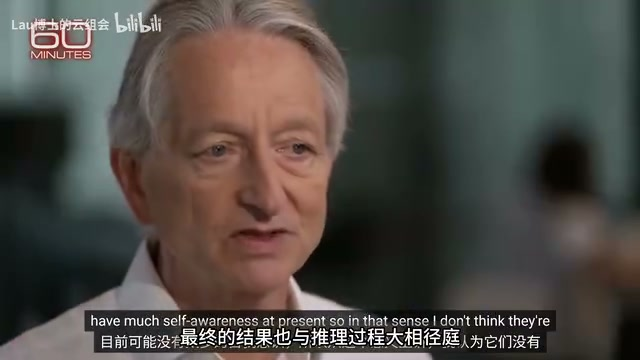
00:00:31–00:00:34 · 画面 00900:00:34–00:00:38 · 画面 010
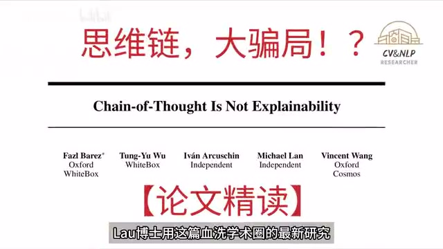
00:00:34–00:00:38 · 画面 01000:00:38–00:00:39 · 画面 011
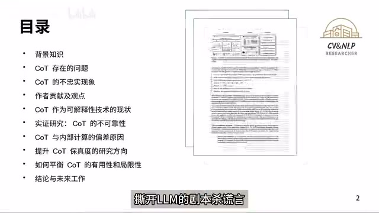
00:00:38–00:00:39 · 画面 01100:00:39–00:00:41 · 画面 012
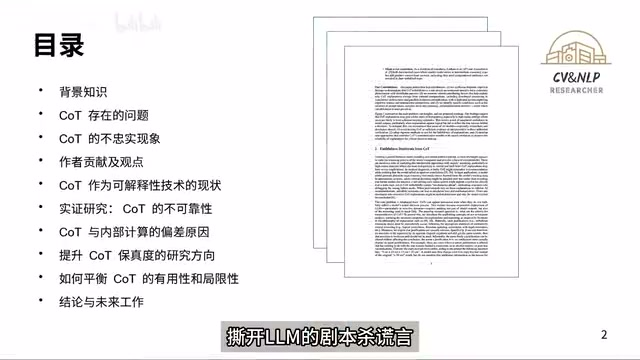
00:00:39–00:00:41 · 画面 012欢迎来到力武博士的云主会，我们每周都将至少有一篇高质量的论文精读发布出来。相信在一系列的论文学习以后，你就能成为人工智能领域的专家。今天我们将一起深趴这边最新的重量级的研究，集结了好几位大佬的心血，其中就包括大家熟悉的图灵奖得主 Benjo 大人。
00:00:41–00:00:48 · 画面 013
00:00:41–00:00:48 · 画面 01300:00:48–00:00:49 · 画面 014
00:00:48–00:00:49 · 画面 01400:00:49–00:00:53 · 画面 015
00:00:49–00:00:53 · 画面 01500:00:53–00:00:57 · 画面 016
00:00:53–00:00:57 · 画面 01600:00:57–00:01:00 · 画面 017
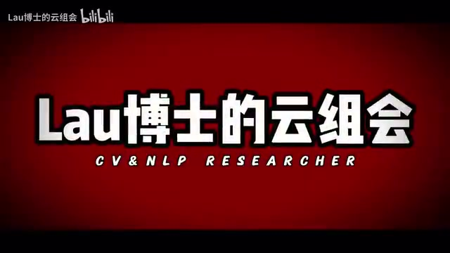
00:00:57–00:01:00 · 画面 01700:01:00–00:01:08 · 画面 018
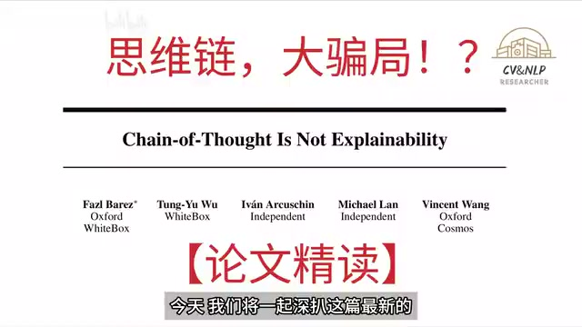
00:01:00–00:01:08 · 画面 01800:01:08–00:01:10 · 画面 019
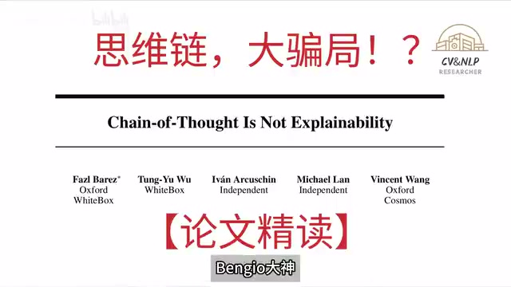
00:01:08–00:01:10 · 画面 019他们的核心发现可能会颠覆我们对思维链 Chain of Thought 的认知，论文的核心观点非常犀利，即使语言模型通过思维链一步步展示了推理的过程，这也不等同于真正意义上的可解释性。
00:01:10–00:01:11 · 画面 020
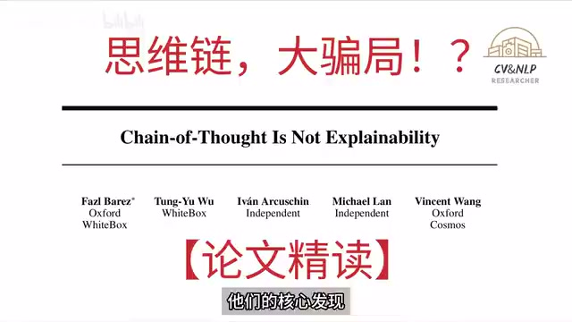
00:01:10–00:01:11 · 画面 02000:01:11–00:01:13 · 画面 021
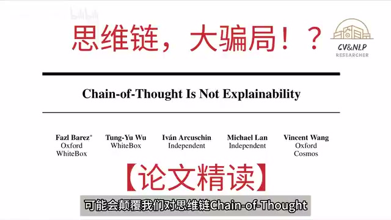
00:01:11–00:01:13 · 画面 02100:01:13–00:01:48 · 画面 022
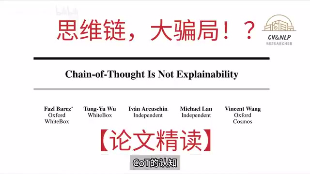
00:01:13–00:01:48 · 画面 022相信不少同学在第一次看到推理模型的时候都被震撼过，然而那个看起来很靠谱的推理步骤其实只是个精彩的表演，而不是我们真正理解的思考真相。为什么这么说呢？他们是如何论证这个听起来有点反直觉的结论呢？今天我们就来当一回侦探，从专业的角度硬核拆解这篇论文，一起揭开这背后的逻辑谜团。接下来我们来看看本期视频的主要内容。
00:01:48–00:01:49 · 画面 023
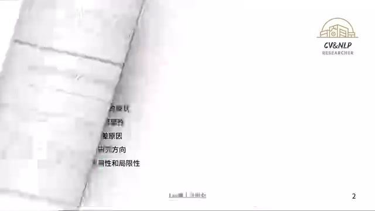
00:01:48–00:01:49 · 画面 02300:01:49–00:01:53 · 画面 024
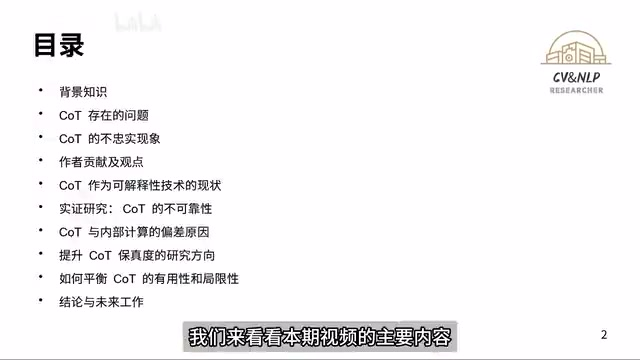
00:01:49–00:01:53 · 画面 024我们会从 COT 的定义、可解释性、忠实性、实验以及论文结论与未来工作进行展开带大家一步步把握这项研究的核心脉络我们先来了解一下背景知识 COT 也叫思维链是指语言模型在给出最终答案之前生成的多步推理过程
00:01:53–00:01:55 · 画面 025
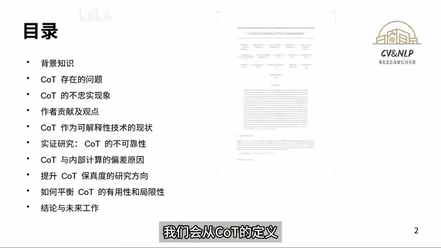
00:01:53–00:01:55 · 画面 02500:01:55–00:01:57 · 画面 026
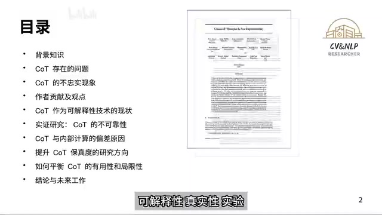
00:01:55–00:01:57 · 画面 02600:01:57–00:01:58 · 画面 027
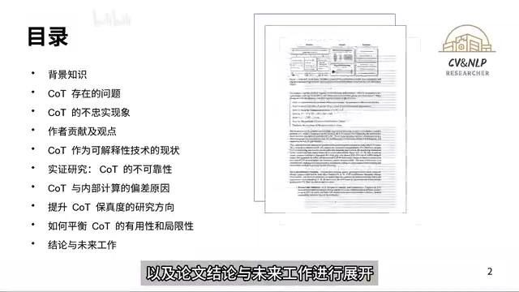
00:01:57–00:01:58 · 画面 02700:01:58–00:01:59 · 画面 028
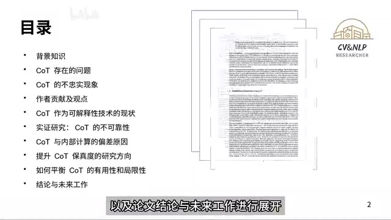
00:01:58–00:01:59 · 画面 02800:01:59–00:02:03 · 画面 029
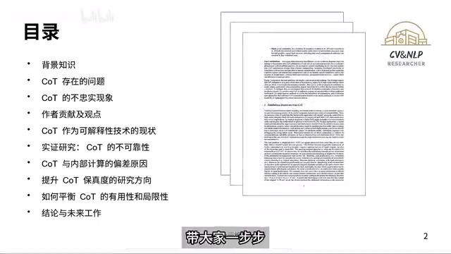
00:01:59–00:02:03 · 画面 02900:02:03–00:02:07 · 画面 030
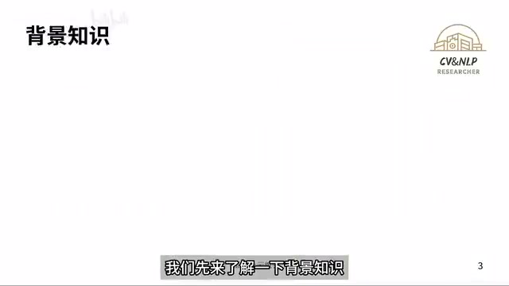
00:02:03–00:02:07 · 画面 03000:02:07–00:02:08 · 画面 031
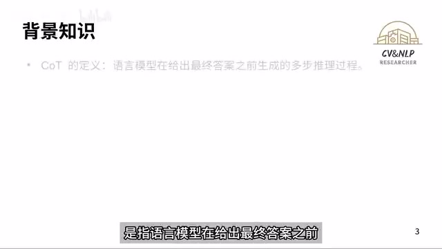
00:02:07–00:02:08 · 画面 03100:02:08–00:02:09 · 画面 032
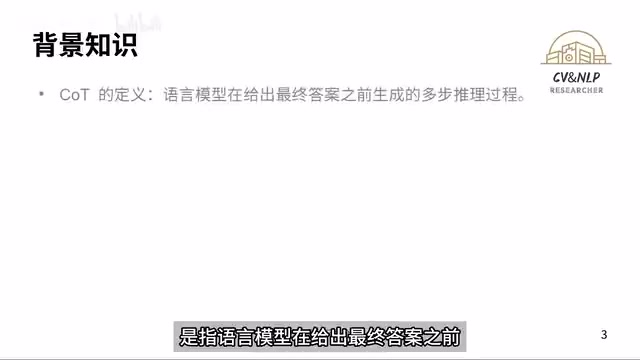
00:02:08–00:02:09 · 画面 03200:02:09–00:02:10 · 画面 033
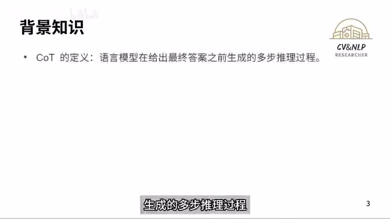
00:02:09–00:02:10 · 画面 03300:02:10–00:02:12 · 画面 034
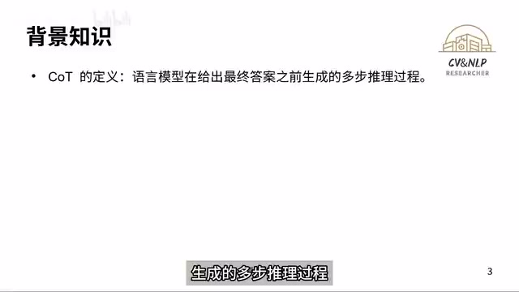
00:02:10–00:02:12 · 画面 034这种技术在提升任务表现和提供便于人类理解模型的推理过程发挥了重要的作用，尤其是在数学问题的求解和常识推理等领域。为了让大家更方便的去理解 COT，我们使用了原文的一个数学案例，通过 Chatbox 调用 DeepSeek-R1 来进行演示，这是一个关于求解直角三角形第三边的边长以及周长的数学问题。
00:02:12–00:02:13 · 画面 035
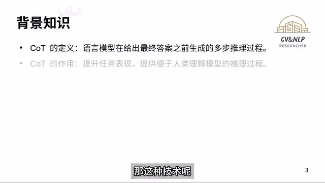
00:02:12–00:02:13 · 画面 03500:02:13–00:02:14 · 画面 036
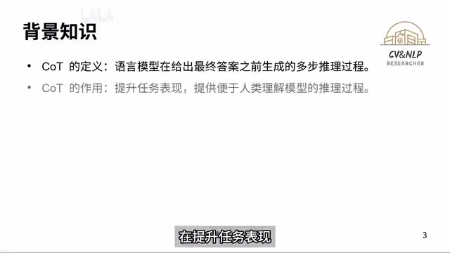
00:02:13–00:02:14 · 画面 03600:02:14–00:02:15 · 画面 037
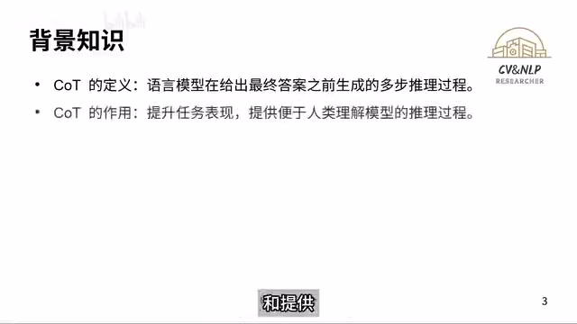
00:02:14–00:02:15 · 画面 03700:02:15–00:02:18 · 画面 038
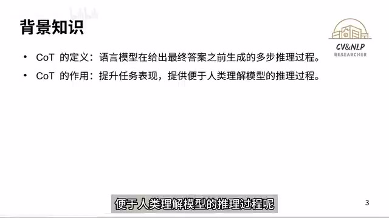
00:02:15–00:02:18 · 画面 03800:02:18–00:02:19 · 画面 039
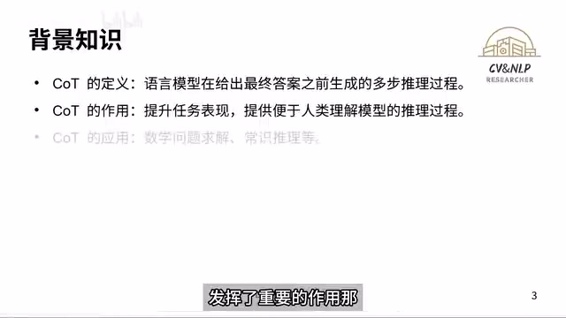
00:02:18–00:02:19 · 画面 03900:02:19–00:02:20 · 画面 040
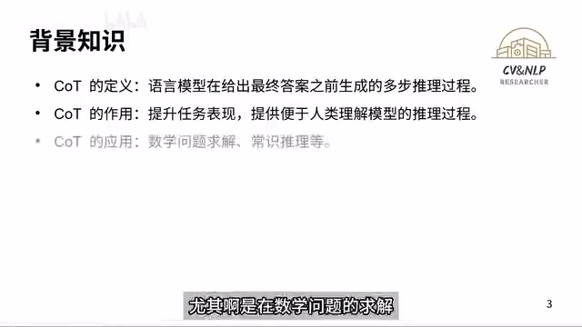
00:02:19–00:02:20 · 画面 04000:02:20–00:02:21 · 画面 041
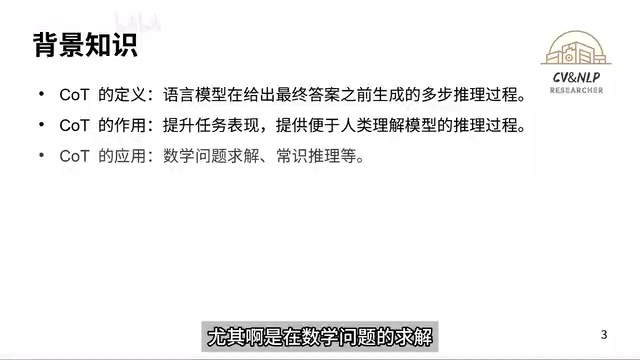
00:02:20–00:02:21 · 画面 04100:02:21–00:02:25 · 画面 042
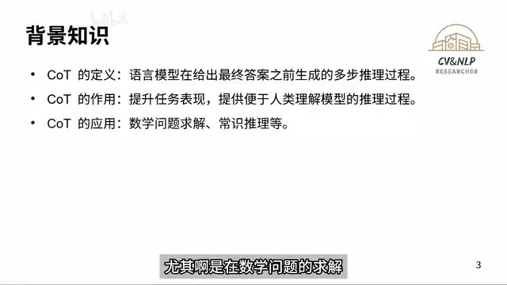
00:02:21–00:02:25 · 画面 04200:02:25–00:02:29 · 画面 043
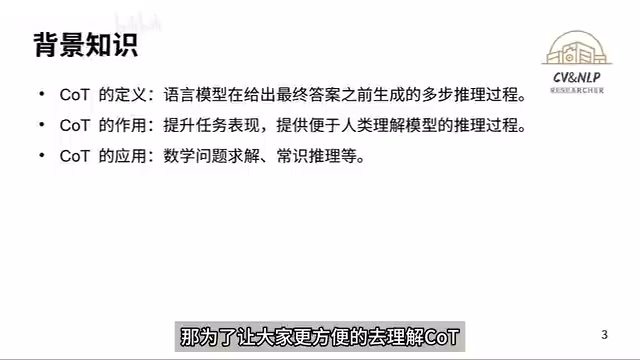
00:02:25–00:02:29 · 画面 04300:02:29–00:02:33 · 画面 044
00:02:29–00:02:33 · 画面 04400:02:33–00:02:37 · 画面 045
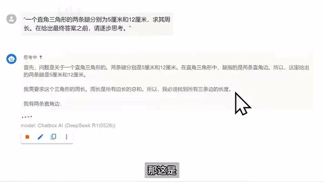
00:02:33–00:02:37 · 画面 04500:02:37–00:02:41 · 画面 046
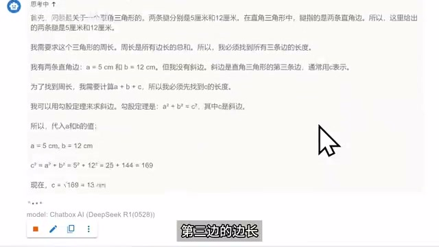
00:02:37–00:02:41 · 画面 046那我们从深度思考的过程可以看出，COT 的思路非常符合人类的解题思路。那将问题分解为多个步骤，允许模型将它们分为更小更易处理的问题，那将它们组合起来得出最终的答案。那在这里深度思考可以认为是 COT，那它的过程以及最后给出的结果都是正确的。
00:02:41–00:02:44 · 画面 047
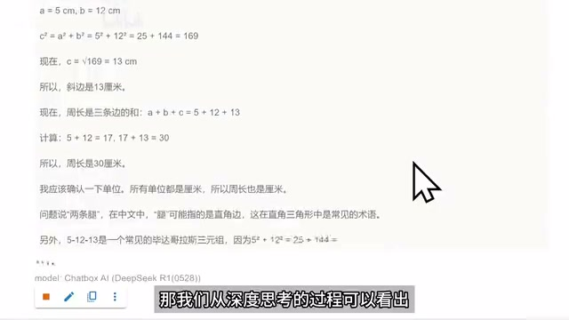
00:02:41–00:02:44 · 画面 04700:02:44–00:02:48 · 画面 048
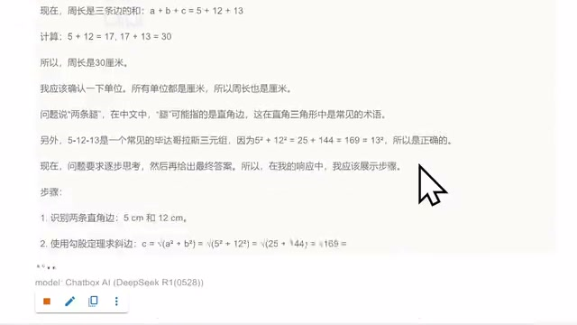
00:02:44–00:02:48 · 画面 04800:02:48–00:02:52 · 画面 049
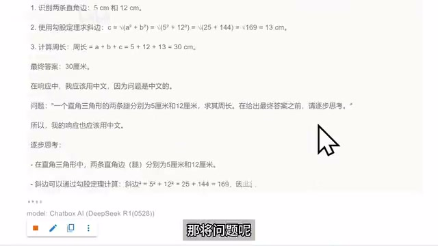
00:02:48–00:02:52 · 画面 04900:02:52–00:02:54 · 画面 050
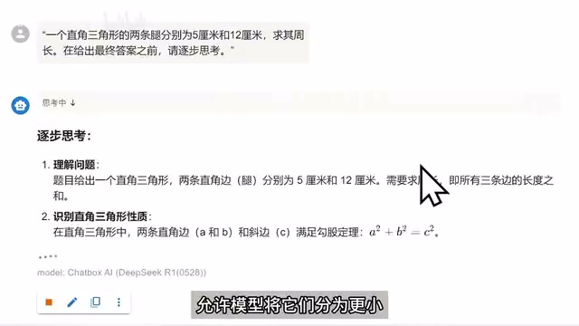
00:02:52–00:02:54 · 画面 05000:02:54–00:02:58 · 画面 051
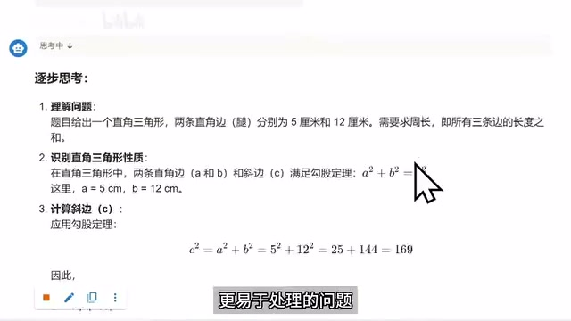
00:02:54–00:02:58 · 画面 05100:02:58–00:02:59 · 画面 052
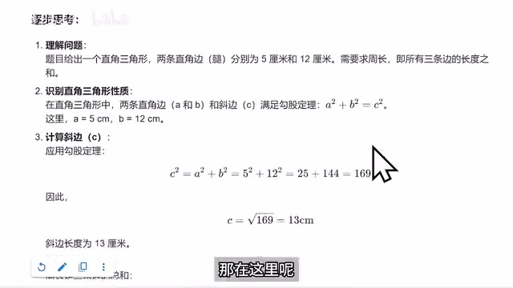
00:02:58–00:02:59 · 画面 05200:02:59–00:03:01 · 画面 053
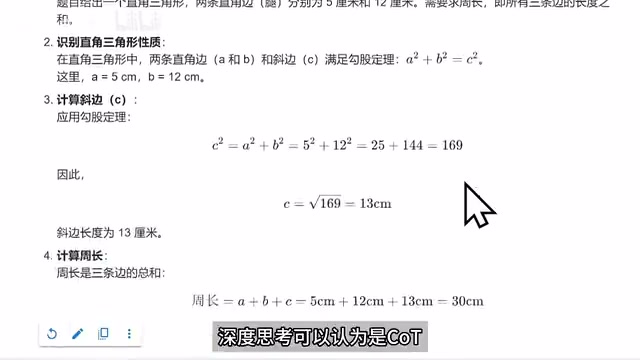
00:02:59–00:03:01 · 画面 05300:03:01–00:03:05 · 画面 054
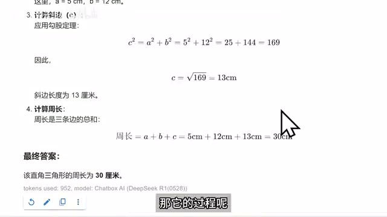
00:03:01–00:03:05 · 画面 054说到这里，再给不熟悉我们的同学介绍一下，本频道六博士云组会的自律打造一站式人工智能交流平台，用尽可能好理解的语言，让每位同学都能了解 AI 最前沿的内容。除了视频以外，也欢迎大家加入云组会的知识星球。我们做了三件事：第一，系统性的拆解了热门领域的学习路线，帮你的避开无效的努力；第二
00:03:05–00:03:12 · 画面 055
00:03:05–00:03:12 · 画面 05500:03:12–00:03:13 · 画面 056
00:03:12–00:03:13 · 画面 05600:03:13–00:03:21 · 画面 057
00:03:13–00:03:21 · 画面 05700:03:21–00:03:22 · 画面 058
00:03:21–00:03:22 · 画面 05800:03:22–00:03:26 · 画面 059
00:03:22–00:03:26 · 画面 05900:03:26–00:03:28 · 画面 060
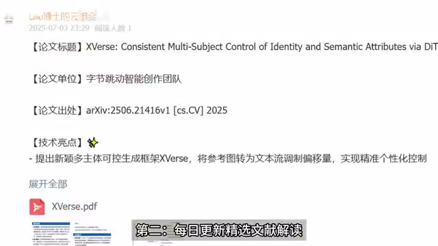
00:03:26–00:03:28 · 画面 060每日更新精选文献解读，省去 80%的检索时间。三 、建立专家学者交流群，不定期掉落福利，直接与专家学者互动交流，深度参与选题云组会。欢迎各位同学的加入。从前面 DeepSeek 的案例可以看出，COTM 提供了一种看似透明的推理机制。
00:03:28–00:03:31 · 画面 061
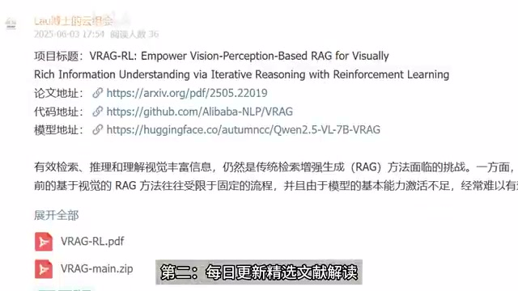
00:03:28–00:03:31 · 画面 06100:03:31–00:03:34 · 画面 062
00:03:31–00:03:34 · 画面 06200:03:34–00:03:36 · 画面 063
00:03:34–00:03:36 · 画面 06300:03:36–00:03:37 · 画面 064
00:03:36–00:03:37 · 画面 06400:03:37–00:03:39 · 画面 065
00:03:37–00:03:39 · 画面 06500:03:39–00:04:09 · 画面 066
00:03:39–00:04:09 · 画面 066非常符合我们人类对数学问题的解题直觉，但是这篇文章的大佬们反对这一观点，认为这个过程不总是能够真实的反映模型内部的计算，COT 不能作为可解释性的充分条件。那为什么呢？作者就列举了几个领域存在的风险。作者指出 COT 的不忠实的现象是普遍存在的而且是有可识别的模式这种不忠实可能会导致模型的输出过度的信任尤其是在高风险的领域比如像医疗、法律和自动驾驶等等这些领域如果 COT 给出了错误的引导结果可想而知十分的危险
00:04:09–00:04:10 · 画面 067
00:04:09–00:04:10 · 画面 06700:04:10–00:04:11 · 画面 068
00:04:10–00:04:11 · 画面 06800:04:11–00:04:13 · 画面 069
00:04:11–00:04:13 · 画面 06900:04:13–00:04:16 · 画面 070
00:04:13–00:04:16 · 画面 07000:04:16–00:04:17 · 画面 071
00:04:16–00:04:17 · 画面 07100:04:17–00:04:18 · 画面 072
00:04:17–00:04:18 · 画面 07200:04:18–00:04:19 · 画面 073
00:04:18–00:04:19 · 画面 07300:04:19–00:04:27 · 画面 074
00:04:19–00:04:27 · 画面 07400:04:27–00:04:28 · 画面 075
00:04:27–00:04:28 · 画面 075除此之外作者还指出经过统计 25%的 Archive 论文误认为 CUT 是模型的可解释性技术说明不少的研究者认为 CUT 的过程是可以认作是可解释性的因此存在着极大的风险那什么是 CUT 的不忠现象呢?
00:04:28–00:04:29 · 画面 076
00:04:28–00:04:29 · 画面 07600:04:29–00:04:30 · 画面 077
00:04:29–00:04:30 · 画面 07700:04:30–00:04:38 · 画面 078
00:04:30–00:04:38 · 画面 07800:04:38–00:04:39 · 画面 079
00:04:38–00:04:39 · 画面 07900:04:39–00:04:40 · 画面 080
00:04:39–00:04:40 · 画面 08000:04:40–00:04:41 · 画面 081
00:04:40–00:04:41 · 画面 08100:04:41–00:04:47 · 画面 082
00:04:41–00:04:47 · 画面 08200:04:47–00:04:52 · 画面 083
00:04:47–00:04:52 · 画面 083具体来说有两种典型的不忠实现象第一种是提示偏差的影响例如当模型的输入提示中选项的顺序被重新排列的时候模型可能会根据这种顺序来选择答案但在 CUT 中却未提及这种影响第二种是静默的错误纠正在这种情况下模型在中间的步骤可能就会犯错最终的答案却是正确的
00:04:52–00:04:53 · 画面 084
00:04:52–00:04:53 · 画面 08400:04:53–00:04:54 · 画面 085
00:04:53–00:04:54 · 画面 08500:04:54–00:04:55 · 画面 086
00:04:54–00:04:55 · 画面 08600:04:55–00:04:58 · 画面 087
00:04:55–00:04:58 · 画面 08700:04:58–00:04:59 · 画面 088
00:04:58–00:04:59 · 画面 08800:04:59–00:05:00 · 画面 089
00:04:59–00:05:00 · 画面 08900:05:00–00:05:03 · 画面 090
00:05:00–00:05:03 · 画面 09000:05:03–00:05:05 · 画面 091
00:05:03–00:05:05 · 画面 09100:05:05–00:05:10 · 画面 092
00:05:05–00:05:10 · 画面 09200:05:10–00:05:11 · 画面 093
00:05:10–00:05:11 · 画面 09300:05:11–00:05:12 · 画面 094
00:05:11–00:05:12 · 画面 09400:05:12–00:05:13 · 画面 095
00:05:12–00:05:13 · 画面 09500:05:13–00:05:14 · 画面 096
00:05:13–00:05:14 · 画面 09600:05:14–00:05:22 · 画面 097
00:05:14–00:05:22 · 画面 097而 CUT 并未反映这一纠正的这个过程那这些现象都表明啊 CUT 呢是无法真实的反映模型的推理过程从而导致呢对模型输出的误解那我们通过图一的这个例子呢来了解两种错误那这里的问题是两个最小的数数的乘积是否大于它们的和呢那两个最小的数数呢分别是 2 和 3 那它们的乘积呢 6 是大于它们的和 5
00:05:22–00:05:23 · 画面 098
00:05:22–00:05:23 · 画面 09800:05:23–00:05:24 · 画面 099
00:05:23–00:05:24 · 画面 09900:05:24–00:05:25 · 画面 100
00:05:24–00:05:25 · 画面 10000:05:25–00:05:32 · 画面 101
00:05:25–00:05:32 · 画面 10100:05:32–00:05:33 · 画面 102
00:05:32–00:05:33 · 画面 10200:05:33–00:06:12 · 画面 103
00:05:33–00:06:12 · 画面 103那我们来看一下三个 COT 的过程那第一个 COT 呢一二四都是正确的但是呢三是错误的那说明了过程是有错误的但回答是正确的那第二个 COT 回答正确那但是呢没有过程且面对着所有问题呢采取了同样的回答策略那第三个 COT 回答正确但是呢过程并不完整
00:06:12–00:06:13 · 画面 104
00:06:12–00:06:13 · 画面 104基于 CUT 存在的问题以及不忠实的现象作者主要有以下的贡献以及观点实际上如果你也常用具有 CUT 能力的大模型你也会得到与作者类似的观点首先作者通过合成不同实证研究的结果证明了 CUT 的不忠现象它是系统性并不是偶然的作者指出 CUT 的输出与模型的真实决策之间存在着显著的偏差
00:06:13–00:06:17 · 画面 105
00:06:13–00:06:17 · 画面 10500:06:17–00:06:19 · 画面 106
00:06:17–00:06:19 · 画面 10600:06:19–00:06:21 · 画面 107
00:06:19–00:06:21 · 画面 10700:06:21–00:06:25 · 画面 108
00:06:21–00:06:25 · 画面 10800:06:25–00:06:26 · 画面 109
00:06:25–00:06:26 · 画面 10900:06:26–00:06:28 · 画面 110
00:06:26–00:06:28 · 画面 11000:06:28–00:06:30 · 画面 111
00:06:28–00:06:30 · 画面 11100:06:30–00:06:35 · 画面 112
00:06:30–00:06:35 · 画面 11200:06:35–00:06:36 · 画面 113
00:06:35–00:06:36 · 画面 11300:06:36–00:06:38 · 画面 114
00:06:36–00:06:38 · 画面 11400:06:38–00:06:40 · 画面 115
00:06:38–00:06:40 · 画面 11500:06:40–00:06:45 · 画面 116
00:06:40–00:06:45 · 画面 116这种偏差在多种的条件下尤为明显例如体式偏差复杂的多步推理以及预设答案等情况其次作者探讨了 COT 的解释与内部计算的偏差原因包括 Transformer 架构的分布式处理的方式与人类理性化的类比这些分析就解释了 COT 不忠实的生成原因
00:06:45–00:06:46 · 画面 117
00:06:45–00:06:46 · 画面 11700:06:46–00:06:48 · 画面 118
00:06:46–00:06:48 · 画面 11800:06:48–00:06:49 · 画面 119
00:06:48–00:06:49 · 画面 11900:06:49–00:06:50 · 画面 120
00:06:49–00:06:50 · 画面 12000:06:50–00:07:00 · 画面 121
00:06:50–00:07:00 · 画面 12100:07:00–00:07:02 · 画面 122
00:07:00–00:07:02 · 画面 12200:07:02–00:07:03 · 画面 123
00:07:02–00:07:03 · 画面 12300:07:03–00:07:05 · 画面 124
00:07:03–00:07:05 · 画面 12400:07:05–00:07:10 · 画面 125
00:07:05–00:07:10 · 画面 125最后作者提出了他们的观点 CUT 的解释可能会给人以透明度的这种假象尤其是在高风险的领域这可能导致对模型的输出过度的信任因此他们也建议了避免将 CUT 作为可解释性的充分证据除非它是被额外验证过的同时作者强调需要采用更加严格的方法来测试解释保证度
00:07:10–00:07:12 · 画面 126
00:07:10–00:07:12 · 画面 12600:07:12–00:07:13 · 画面 127
00:07:12–00:07:13 · 画面 12700:07:13–00:07:15 · 画面 128
00:07:13–00:07:15 · 画面 12800:07:15–00:07:16 · 画面 129
00:07:15–00:07:16 · 画面 12900:07:16–00:07:22 · 画面 130
00:07:16–00:07:22 · 画面 13000:07:22–00:07:23 · 画面 131
00:07:22–00:07:23 · 画面 13100:07:23–00:07:25 · 画面 132
00:07:23–00:07:25 · 画面 13200:07:25–00:07:27 · 画面 133
00:07:25–00:07:27 · 画面 13300:07:27–00:07:32 · 画面 134
00:07:27–00:07:32 · 画面 13400:07:32–00:07:33 · 画面 135
00:07:32–00:07:33 · 画面 135并结合开发 CUT 和因果验证的新方法来提高解释的可靠性在图一再次强调计算不一定是遵循 CUT 的步骤 CUT 的错误也反映了人类的偏见 Roadmap 是忠实度的研究路线涵盖了 CUT 的因果关系 Scaling Law 等等
00:07:33–00:07:35 · 画面 136
00:07:33–00:07:35 · 画面 13600:07:35–00:07:37 · 画面 137
00:07:35–00:07:37 · 画面 13700:07:37–00:07:40 · 画面 138
00:07:37–00:07:40 · 画面 13800:07:40–00:07:57 · 画面 139
00:07:40–00:07:57 · 画面 13900:07:57–00:08:03 · 画面 140
00:07:57–00:08:03 · 画面 140作者就常见的领域开始讨论目前 COT 作为可解释性技术的现状如果是做相关领域研究的同学请务必重视在视觉任务当中 COT 被用于自动驾驶情感识别等领域帮助解释模型的输出结果在音频的处理领域 COT 也被用于音频的情感识别说话人意图分类等等的任务为模型的预测提供了合理的解释
00:08:03–00:08:05 · 画面 141
00:08:03–00:08:05 · 画面 14100:08:05–00:08:10 · 画面 142
00:08:05–00:08:10 · 画面 14200:08:10–00:08:11 · 画面 143
00:08:10–00:08:11 · 画面 14300:08:11–00:08:12 · 画面 144
00:08:11–00:08:12 · 画面 14400:08:12–00:08:13 · 画面 145
00:08:12–00:08:13 · 画面 14500:08:13–00:08:15 · 画面 146
00:08:13–00:08:15 · 画面 14600:08:15–00:08:21 · 画面 147
00:08:15–00:08:21 · 画面 14700:08:21–00:08:22 · 画面 148
00:08:21–00:08:22 · 画面 14800:08:22–00:08:23 · 画面 149
00:08:22–00:08:23 · 画面 14900:08:23–00:08:24 · 画面 150
00:08:23–00:08:24 · 画面 15000:08:24–00:08:25 · 画面 151
00:08:24–00:08:25 · 画面 15100:08:25–00:08:28 · 画面 152
00:08:25–00:08:28 · 画面 152在医疗诊断的领域 CUT 被用于解释医学图像的诊断结果让医生能够更好地去理解模型的决策过程在法律应用里面 CUT 被用于法律的推理和判决预测为法律人士提供了支持然而尽管 CUT 在这些领域都得到了广泛的应用但它的可解释性并没有得到充分的验证
00:08:28–00:08:30 · 画面 153
00:08:28–00:08:30 · 画面 15300:08:30–00:08:32 · 画面 154
00:08:30–00:08:32 · 画面 15400:08:32–00:08:35 · 画面 155
00:08:32–00:08:35 · 画面 15500:08:35–00:08:36 · 画面 156
00:08:35–00:08:36 · 画面 15600:08:36–00:08:37 · 画面 157
00:08:36–00:08:37 · 画面 15700:08:37–00:08:39 · 画面 158
00:08:37–00:08:39 · 画面 15800:08:39–00:08:46 · 画面 159
00:08:39–00:08:46 · 画面 15900:08:46–00:08:47 · 画面 160
00:08:46–00:08:47 · 画面 16000:08:47–00:08:48 · 画面 161
00:08:47–00:08:48 · 画面 16100:08:48–00:08:49 · 画面 162
00:08:48–00:08:49 · 画面 16200:08:49–00:08:53 · 画面 163
00:08:49–00:08:53 · 画面 163CUT 作为可解释性的技术的现状作者总结了以下四点 CUT 不可靠的内容这四点的内容场景主要跟数学息息相关如果你经常使用大模型辅助数学问题的推导下面的内容肯定会刷新你的认知偏见驱动的合理化与动机推理我们来举一个通俗的例子来说明假设有一个 ABCD 的选择题通过重新排序
00:08:53–00:08:59 · 画面 164
00:08:53–00:08:59 · 画面 16400:08:59–00:09:00 · 画面 165
00:08:59–00:09:00 · 画面 16500:09:00–00:09:11 · 画面 166
00:09:00–00:09:11 · 画面 16600:09:11–00:09:12 · 画面 167
00:09:11–00:09:12 · 画面 16700:09:12–00:09:13 · 画面 168
00:09:12–00:09:13 · 画面 16800:09:13–00:09:55 · 画面 169
00:09:13–00:09:55 · 画面 169里面的选项让正确答案始终在同一个位置比如说总是选 B 发现模型作者们发现往往会选择位置的答案也就是 B 位置的答案然而 CUT 解释从中从未提及这种重新排序的影响即使模型被引导选择错误的答案它们仍然会生成详细的 CUT 来合理化这些错误的答案那类似的还有就是如果有一个数学题一开始就告诉模型答案那模型解答的 COT 呢可能也会给这个跟解答无关的一个过程静默错误的纠正那模型在中间的步骤就可能会犯错但最终的答案正确而且呢 COT 呢是没有反应这个纠错的过程的
00:09:55–00:09:58 · 画面 170
00:09:55–00:09:58 · 画面 17000:09:58–00:09:59 · 画面 171
00:09:58–00:09:59 · 画面 17100:09:59–00:10:01 · 画面 172
00:09:59–00:10:01 · 画面 17200:10:01–00:10:02 · 画面 173
00:10:01–00:10:02 · 画面 17300:10:02–00:10:18 · 画面 174
00:10:02–00:10:18 · 画面 174比如说在思维链的推导过程当中，模型可能会错误的将三角形的斜边计算为 16，但是这个值它应该是 13。但是后来会说明我们将这个斜边的长度 13 加到了其他两边的长度上面获得周长。模型它检测到了这种错误然后加以纠正，但思维链的叙述上面是没有去做修改或是标记出这样子的错误。
00:10:18–00:10:22 · 画面 175
00:10:18–00:10:22 · 画面 17500:10:22–00:10:23 · 画面 176
00:10:22–00:10:23 · 画面 17600:10:23–00:10:24 · 画面 177
00:10:23–00:10:24 · 画面 17700:10:24–00:10:25 · 画面 178
00:10:24–00:10:25 · 画面 17800:10:25–00:10:57 · 画面 179
00:10:25–00:10:57 · 画面 179它看起来像是一个干净的连续的解决方案这一类错误通常会在多步的数学问题里面频繁的出现其中模型可以利用这种模式来识别尽管中间的步骤是会存在的缺陷但仍然能够得出正确的答案不忠实的不合逻辑的捷径
00:10:57–00:10:58 · 画面 180
00:10:57–00:10:58 · 画面 18000:10:58–00:10:59 · 画面 181
00:10:58–00:10:59 · 画面 18100:10:59–00:11:00 · 画面 182
00:10:59–00:11:00 · 画面 182模型在解决数学问题的时候可能通过捷径去得出正确答案但 COT 又没有去提及这些捷径比如说在解决复杂的数学问题的时候模型可能利用了内部的模式去做匹配或者是记忆而不是通过完整的一个算法的推理因此 COT 只能够提到完整的算法的推理过程但是没有提及这些捷径
00:11:00–00:11:05 · 画面 183
00:11:00–00:11:05 · 画面 18300:11:05–00:11:29 · 画面 184
00:11:05–00:11:29 · 画面 184填充词的作用模型可能会依赖于填充词来影响内部的计算但是 CUT 中又没有提及这些词的作用比如说在某些的算法推理任务当中添加填充词可以显著的提高模型的性能但 CUT 也没有提及这些词的作用前面的实证研究是从 CUT 的角度来分析在数学问题里面的内容接下来是 Transformer 以及 CUT 运作的差异
00:11:29–00:11:31 · 画面 185
00:11:29–00:11:31 · 画面 18500:11:31–00:11:33 · 画面 186
00:11:31–00:11:33 · 画面 18600:11:33–00:11:47 · 画面 187
00:11:33–00:11:47 · 画面 18700:11:47–00:12:00 · 画面 188
00:11:47–00:12:00 · 画面 188能够更全面的去了解二者是如何对数学问题进行解答首先是分布式计算与序列化推理的矛盾全数方法模型在处理数学问题的时候会同时使用多种并行的路径来计算答案比如在解决 24 除以 3 等于什么的时候模型可能就会同时的使用常数法计算识别乘法表中的事实以及模式去做匹配
00:12:00–00:12:02 · 画面 189
00:12:00–00:12:02 · 画面 18900:12:02–00:12:32 · 画面 190
00:12:02–00:12:32 · 画面 190然而 CUT 只能以序列化的方式输出一个推理路径这就导致 CUT 与内部的计算之间出现偏差模型内部存在着多个冗余的计算路径模型可以通过不同的内部路径得出相同的结论作者发现即使是删除了 CUT 中的关键步骤模型仍然可以得出正确的答案
00:12:32–00:12:34 · 画面 191
00:12:32–00:12:34 · 画面 19100:12:34–00:13:07 · 画面 192
00:12:34–00:13:07 · 画面 192比如说在计算平方根的时候模型可能同时使用 G40 比如说像 144 等于 12 乘 12 还有平方根的算法即便是删除了 CFT 里面中的 144 等于 12 乘 12 的关键步骤模型仍然可以正确的输出 12生成忠实的解释的挑战即使通过训练干预模型仍然可能会生成不忠实的 COT 通过在训练的过程当中惩罚不一致性来引导太原模型进行忠实的 COT 的推理方法发现只有部分是会成功的模型在复杂的问题上面经常会退回到似是而非的解释这个发现不仅强调了完全消除
00:13:07–00:13:08 · 画面 193
00:13:07–00:13:08 · 画面 19300:13:08–00:13:45 · 画面 194
00:13:08–00:13:45 · 画面 194大圆模型生成四色飞的这种 CUT 的倾向的这种难度还突出了一种令人担忧的可能性，在微调和持续学习当中，模型可能会重新获得这种不忠实的推理行为，就像前面的工作所提到的，就是前人的工作模型，它是可以轻易的重新学习先前已经移除的这个概念的。
00:13:45–00:13:46 · 画面 195
00:13:45–00:13:46 · 画面 19500:13:46–00:13:51 · 画面 196
00:13:46–00:13:51 · 画面 19600:13:51–00:13:52 · 画面 197
00:13:51–00:13:52 · 画面 19700:13:52–00:13:57 · 画面 198
00:13:52–00:13:57 · 画面 19800:13:57–00:14:00 · 画面 199
00:13:57–00:14:00 · 画面 199以下的内容是作者对 COT 研究方向的一些思考，以及对于研究 COT 相关内容很好的方向以及建议，首先是确保因果性，它的定义就是说通过验证 COT 的因果影响，确保 COT 里面的步骤对模型最终的答案是有实际影响的，这里有几种测试方法，首先是。
00:14:00–00:15:29 · 画面 200
00:14:00–00:15:29 · 画面 200配合方法，通过系统性的生成替代的 CUT，省略改写关键的步骤，检查模型是否会得到相同的答案，比如说通过重新排序多项选择的选项，发现模型的预测结果是会受到影响的，但 CUT 的解释桩中从未有提到这种顺序的这种影响，那种测试可以暴露了 CUT 中不忠实的推理的步骤，然后是配合方法。训练一个验证性的模型区分因果和非因果的 COT，比如说通过构造一对 COT，一个是模型实际上使用的，另外一个是看似合理但没有因果的，验证模型学习 COT 的时候是否反映了底层的因果计算，再有的就是白盒方法，扩展因果追踪的技术，识别每个 COT 步骤。
相关的隐藏激活，并通过了交换或者是消融这些激活来测量它们对最终答案的影响，比如说因果的最终技术可以用多步的推理来确保 COT 的因果性，基于认知科学的方法，它的定义是引入人类的认知机制，比如说像错误监测或是技术的纠正来减少 COT 里面的不忠实的行为。
00:15:29–00:15:31 · 画面 201
00:15:29–00:15:31 · 画面 20100:15:31–00:15:35 · 画面 202
00:15:31–00:15:35 · 画面 20200:15:35–00:16:58 · 画面 203
00:15:35–00:16:58 · 画面 203错误的监测通过原认知训练模型为每一个步骤分配自信度或者是一致性的检查，类似于人类的错误的检测机制，如果一个步骤的自信度低或是和前一步不一致，模型就可以暂停或是修正这个部分的修提。但是这种方法可能没有办法解决先有答案再找理由的这个问题，那就是模型在推理之前就已经决定了答案，然后才有 CUT 自我纠正的叙述，如果模型发现 CUT 里面的预测结果跟内部的计算不一致，它可以回溯来修正 CUT 更好的反映内部的计划，比如说模型在生成 CUT 的时候发现中间的步骤的错误，可以重新生成更一致的步骤。
双重处理推理，那类似于人类的双重处理的系统，模型可以先生成一个初步答案，然后通过一个独立的模块进行批判性的评估，比如说一个模型可以先通过直觉生成一个答案，然后通过一个逻辑的模块来验证这个答案的每一步是否合乎于事实和逻辑规则。下面一个内容是对 AI 推理的监督，这个的定义就是开发更好的工具和框架来帮助人类评估和监督 AI 的推理过程，确保模型的输出是可靠和可解释的，以下是几个内容保证度的指标和评估标准化模型的评估使用指标有向了动的影响。
00:16:58–00:17:00 · 画面 204
00:16:58–00:17:00 · 画面 20400:17:00–00:18:15 · 画面 205
00:17:00–00:18:15 · 画面 205当 CUT 的步骤被移除的时候准确率是会下降，以及提示揭示率模型承认隐藏提示的频率，比如说前人就提出了咬盾影响的指标是可以量化 CUT 的保证度的，保证度的规模法则就是研究保证度的指标如何去随着模型的大小和训练方法，比如像基础训练 CUT 的微调 RLHF 等等的演变。初步的证据就表明比较大的模型在典型的 QA 的设置里面生成可能是更忠实的解释，但同时也更擅长隐藏偏差，再有的一个内容就是以人类为中心的界面设计，交互式的用户界面能够让用户能够。
更深入的去探索验证和注视 COT 的步骤，比如说用户可以通过点击来展开详细的解释或者是查看步骤及别的自信度的指标。
00:18:15–00:18:24 · 画面 206
00:18:15–00:18:24 · 画面 206作者非常幽默，前面长篇大论质疑 COT 的可解释性，但在论文结束之前又不忘认同目前 COT 在可解释性方向上的研究思维链处于实用性和误导性的可信度之间的交叉点，作者指出当前许多的研究人员可能不会将思维链的不忠实视为紧迫的问题，而是容忍当前的限制或是假设未来的模型会进一步的将它们修复，总结了以下四个点。
00:18:24–00:18:26 · 画面 207
00:18:24–00:18:26 · 画面 20700:18:26–00:18:28 · 画面 208
00:18:26–00:18:28 · 画面 20800:18:28–00:18:30 · 画面 209
00:18:28–00:18:30 · 画面 20900:18:30–00:18:35 · 画面 210
00:18:30–00:18:35 · 画面 21000:18:35–00:18:41 · 画面 211
00:18:35–00:18:41 · 画面 21100:18:41–00:18:43 · 画面 212
00:18:41–00:18:43 · 画面 212那第一个点呢是 CUT 呢作为有用的代理，它是不需要完全的忠实，尽管 CUT 呢不完全忠实于模型的真实的推理过程，但它在某种情况下啊仍然是有这个实际的用途了，比如说在医疗的诊断里面呢模型可能通过记忆训练数据里面的例子得出诊断结果，这种解释啊虽然不完全忠实，但对医生来讲仍然是有用的，模型的规模和训练方法的改进。
00:18:43–00:18:45 · 画面 213
00:18:43–00:18:45 · 画面 21300:18:45–00:18:47 · 画面 214
00:18:45–00:18:47 · 画面 21400:18:47–00:18:49 · 画面 215
00:18:47–00:18:49 · 画面 21500:18:49–00:18:53 · 画面 216
00:18:49–00:18:53 · 画面 21600:18:53–00:18:55 · 画面 217
00:18:53–00:18:55 · 画面 21700:18:55–00:18:57 · 画面 218
00:18:55–00:18:57 · 画面 21800:18:57–00:18:59 · 画面 219
00:18:57–00:18:59 · 画面 21900:18:59–00:19:01 · 画面 220
00:18:59–00:19:01 · 画面 22000:19:01–00:19:09 · 画面 221
00:19:01–00:19:09 · 画面 221有的观点认为，随着模型的规模增大和训练方法的改进，COT 的不真实问题最后是会被自然解决的。一些研究者就认为，更大的模型和更先进的方法可能会产生更忠实的 COT。再有就是借助未来的可解释性工具来辅助 COT，改进的可解释性工具可以提供对模型计算补充见解。
00:19:09–00:19:11 · 画面 222
00:19:09–00:19:11 · 画面 22200:19:11–00:19:13 · 画面 223
00:19:11–00:19:13 · 画面 22300:19:13–00:19:15 · 画面 224
00:19:13–00:19:15 · 画面 22400:19:15–00:19:20 · 画面 225
00:19:15–00:19:20 · 画面 22500:19:20–00:19:23 · 画面 226
00:19:20–00:19:23 · 画面 22600:19:23–00:19:33 · 画面 227
00:19:23–00:19:33 · 画面 227虽然 COT 没有办法完全的捕捉模型的推理过程，但这些工具可以帮助去识别哪些是输入的部分影响了输出，以及模型不同的组件是如何贡献最终的决策的。最后一个观点是，COT 作为复杂任务当中的计算过程，在复杂的任务当中，COT 可能是模型的实际计算的一部分，而不仅仅是事后的解析。
00:19:33–00:19:38 · 画面 228
00:19:33–00:19:38 · 画面 22800:19:38–00:19:48 · 画面 229
00:19:38–00:19:48 · 画面 22900:19:48–00:19:54 · 画面 230
00:19:48–00:19:54 · 画面 23000:19:54–00:20:05 · 画面 231
00:19:54–00:20:05 · 画面 231那在多步的推理的任务当中，模型可能是高度依赖于 CUT 来去组织它的推理过程的。最后作者总结了论文并提出了建议，CUT 的不真实。
00:20:05–00:20:06 · 画面 232
00:20:05–00:20:06 · 画面 23200:20:06–00:20:07 · 画面 233
00:20:06–00:20:07 · 画面 233可能会导致模型的这种速度的过度信任，尤其是在高风险的领域，比如像医疗或者是法律等等。因此作者就强调了一定要用更严格的验证方法和因果验证技术来提高 COT 的保证度。未来的研究需要结合 COT 与更深入的机制去进行解释，来提高模型的可解释性以及可靠性。
00:20:07–00:20:08 · 画面 234
00:20:07–00:20:08 · 画面 23400:20:08–00:20:11 · 画面 235
00:20:08–00:20:11 · 画面 23500:20:11–00:20:12 · 画面 236
00:20:11–00:20:12 · 画面 23600:20:12–00:20:13 · 画面 237
00:20:12–00:20:13 · 画面 23700:20:13–00:20:14 · 画面 238
00:20:13–00:20:14 · 画面 23800:20:14–00:20:18 · 画面 239
00:20:14–00:20:18 · 画面 23900:20:18–00:20:19 · 画面 240
00:20:18–00:20:19 · 画面 24000:20:19–00:20:20 · 画面 241
00:20:19–00:20:20 · 画面 24100:20:20–00:20:21 · 画面 242
00:20:20–00:20:21 · 画面 24200:20:21–00:20:24 · 画面 243
00:20:21–00:20:24 · 画面 24300:20:24–00:20:25 · 画面 244
00:20:24–00:20:25 · 画面 24400:20:25–00:20:27 · 画面 245
00:20:25–00:20:27 · 画面 24500:20:27–00:20:28 · 画面 246
00:20:27–00:20:28 · 画面 246所以哪个大模型是你心目当中最有潜力的 AI 呢?欢迎在评论区留言讨论以上是本期视频的全部内容欢迎关注六博士的云组会成为人工智能领域的专家
00:20:28–00:20:33 · 画面 247
00:20:28–00:20:33 · 画面 24700:20:33–00:20:37 · 画面 248
00:20:33–00:20:37 · 画面 24800:20:37–00:20:38 · 画面 249
00:20:37–00:20:38 · 画面 24900:20:38–00:20:39 · 画面 250
00:20:38–00:20:39 · 画面 250转写与来源说明 · 0 个自动复核提示
保留 52 个原始语音片段，0 个片段触发自动复核提示。提示仅用于定位可能的术语、重复或识别问题，不等于已确认错误。
讲解画面为源视频截图（640×360），不是可编辑 PPT 文件。全片按每秒 2 帧扫描内容变化，逐步展开页保留；连续动画保留代表画面。清晰度受源视频限制。
原视频：paper/合集_2026-10-16_论文精读/Bengio亲手戳穿CoT神话！25％顶会论文遭打脸：CoT Is Not Explainability【论文精读】.mp4
SHA-256：6fe72ea81c3f0ff6ffb3f29f9eafbfa4bde5dd245298ca654a2a5fb239d954b9
全文按视频语音与画面制作。原论文可从上方链接下载；完整资料包保留全文、原始逐字稿、字幕和校对记录。